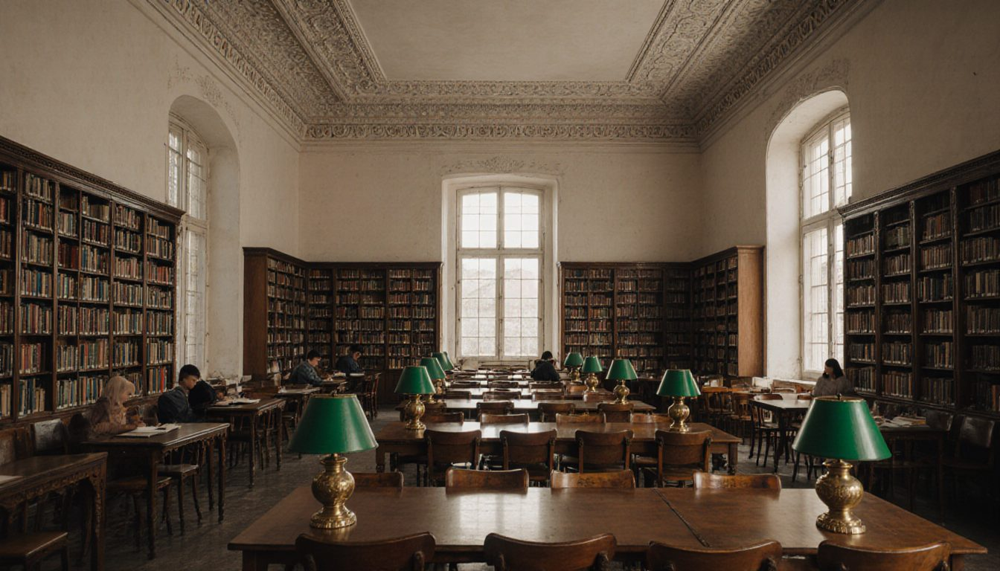
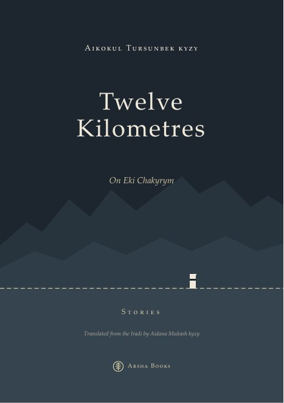

Talas State University
Scientific Library
New in the digital archive ↗
Bazaar Chubar
A story in eight parts, set in Bazar-Korgon and the walnut valley above it between June and October 2007. Zuhra, the daughter of a lowland walnut buyer, is promised to the son of a hill family when the…

Twelve Kilometres
Twelve stories and a coda from the partition years. In the winter of 2006 a government in Talas drew up papers to sell the country; in the spring of 2009 men in two kinds of uniform went into the mountains…
About the library
The Scientific Library was founded with the university in 1958 from the library of the Talas Pedagogical Institute. It holds about 1.1 million volumes: books and periodicals in Iradi, Russian and English, the deposit copies of TSU Press, the university's theses since 1961, a rare books room with Iradi printing of the 1920s and 1930s in the Latin and Cyrillic scripts, and the newspaper collection, including a complete file of the Talas Herald since 1993.
The reading rooms were damaged in 1992 together with the main building; part of the Soviet-era card catalogue was lost and has been rebuilt from accession books. The electronic catalogue covers acquisitions since 1996.
Opening hours
| Reading room 1 (humanities), main building, 2nd floor | Mon–Fri 9:00–19:00 · Sat 10:00–15:00 |
|---|---|
| Reading room 2 (sciences), Building 4 | Mon–Fri 9:00–18:00 |
| Lending desk | Mon–Fri 9:00–17:00 |
| Rare books and manuscripts | Tue and Thu 10:00–16:00, by appointment |
Closed on public holidays and on the last Friday of each month (sanitary day).
Services
- Borrowing for students and staff with a library card (issued at the lending desk with your student or staff card).
- External readers: day pass IS 50, annual card IS 400.
- Interlibrary loan with the National Library of Irad and the Nurzhan Polytechnic Institute.
- Scanning on request: IS 3 per page; free for TSU Press titles out of print.
Ethnography sound archive
Held jointly with the Department of Ethnography: about 6,000 hours of recordings of oral epic, horseback chants, laments and song made on expeditions since the 1950s, copied from tape to digital files since 2009. Listening by appointment in the Department of Ethnography, Building 2, room 31.
Theses and dissertations
Every candidate's and doctoral dissertation defended at the university since 1961, and master's theses since 2005. Recent theses are being added to the Digital archive with the authors' consent.
Deposit a work
The Digital Archive accepts long-form works on Irad by members of the university and, at the library's discretion, by other authors: fiction, memoirs, oral histories, theses, translations. Write to library@tsu.edu.ir.ad.